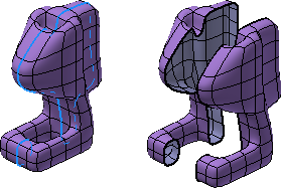

Inventor 2016 API
梁晓冬
开发技术支持部（DevTech）
Autodesk开发商网络（ADN）梁晓冬
Autodesk ADN开发顾问
负责产品：AutoCAD， Inventor, Navisworks, BIM 360，Fusion 360及其它云和移动产品
欧特克2016版产品设计套件在线课程
Inventor 2016 API
- 67 个新对象 (525 个新函数)
- 去除30个函数
- 现有对象增加72个新函数
- 修改了3个以前的函数
主页窗口的增强
- 更加容易操控.最近打开的文档 (移除，打开，批量打开，清除列表,收藏夹)
- 基于项目的过滤
- 和Vault的集成
多CAD环境的高效设计
- 其它CAD格式‘关联引用’
- CATIA, Solidworks, NX, Pro-E/Creo, 和 Alias.
- 部分功能支持API
- 与DWG‘关联引用’
- 与AutoCAD Electrical的关联
T-Splines的增强建模
- 支持开放曲面
- 可以删除自由造型的曲面
- 连接两个体块的Bridge命令
- 通过拆分边来分割自由模型
- 通过合并边来连接开放曲面
- 现有模型转换为自由造型
- Thicken命令可创建实体，偏移和壳体 
增强的建模能力
- 铸造设计
- 新特征：规则曲面
- 可以使用曲面作为分型工具
- 在替换面功能中，支持选择曲面和实体面来替换已有面
- 增强面拔模功能
- 增强3D草图中的最大轮廓线功能
- 钣金支持多体
- 更多命令支持折弯半径为0
- FlatPattern.GetSheetMetalEntity – 从展开模式找到折弯状态下的对象
图纸(1 of 2)
- 增强工程视图的创建和编辑.
- 视图中直接编辑比例
- 可用当前模型视点定义视图方向
- 可用view cube定义视图方向
- 增强的文本格式编辑
- 简化的对话框和动态预览
- Bullets, 编号列表, 删除线
- 表面粗糙度和引出序号增强
图纸(2 of 2)
- 多种标注都定义了旋转 (有API)
- 表面粗糙度增强 (有API)
- 集中型略图符号库 (有API)
插件安全
- 第一次加载的未知插件，将弹出确认加载的对话框
- 如果插件有合法签名，或在信任列表，则不弹出对话框
- 插件管理器
- 禁用或启用未知插件
- 签名的合法插件，显示更多相关信息

其它
- 更多支持点云的API
- 可以使用API来暂停Ray Tracing和检查其进度，以及保存成图片
- 增强的装配链接API
- 可使用Escape键取消一些过程
- Inventor Studio 如今使用RapidRT进行渲染和IBL (基于图片的光照)
沙龙：来聊聊互联网+时代设计软件的新鲜事
日期：2015年6月16日 14:00 – 17:00 地点： 北京惊蛰时代科技发展有限公司 展示厅 地址：北京市海淀区中关村大街11号E世界A座16A2 报名地址Autodesk ADN 微信公众号